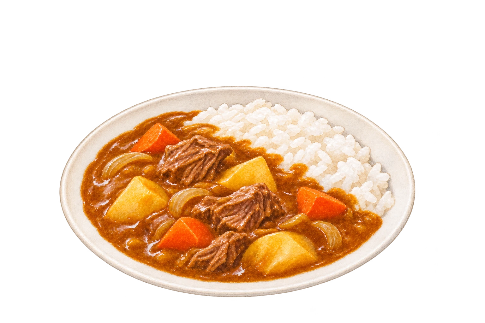

WELCOME TO THE CURRY MARKET
じぶんだけの
じぶんだけの
レストランをつくろう！
英語を練習してコインを集め、お店を育てて飾ろう。

お店を選んで、じぶんのアイデアで育てよう ● ● ●
0ことばに出会った
0聞き取り正解
0カレーの具材
WORD CARDS
カレーのことば
絵を見て、お手本を聞いてみよう。
録音はこの画面の中だけで再生できます。アプリには送信・保存されません。
ORDER LISTENING GAME
注文内容を聞き取ろう
お店の人の質問のあと、注文された品物を6つの絵から選ぼう。
注文を聞こうポイント 0
What do you want?何がほしいですか？
注文された品物をすべてタップしよう（1〜3こ）。
LISTENING QUEST
音を聞いて、絵をえらぼう
英語を聞いて、同じ具材の絵をタップしよう。
チャレンジ 1正解 0
音を聞いてから、絵をえらぼう。
SHOPPING ROLEPLAY
お店で買い物ごっこ
お客さん役・お店の人役をえらんで、会話してみよう。
TODAY'S INGREDIENT
にんじん
会話 1 / 5お客さん役
お店の人
What do you want?
何がほしいですか？お手本を聞いて、会話の流れをつかもう。
自分の番は画面のマイクを押して話そう。話し終えたら「話し終えた・判定する」を押してね。録音はアプリに保存しません。
MY RESTAURANT STORY
じぶんだけのレストラン
お店をひとつ選んで、家具や道具を自由に置き、少しずつ育てていこう。
🪙 0 コインお店をえらぼう
最初のお店をひとつえらぼう
選んだお店を、ここから自分らしく育てます。
家具をつかんで好きな場所へ。選んだ家具は下のつまみで大きさを変えられるよ。
FURNITURE & TOOLS